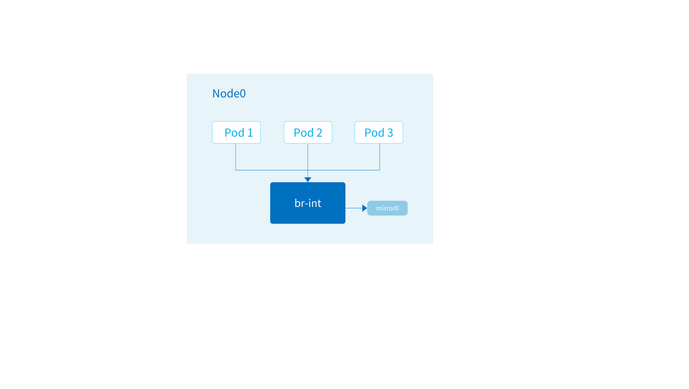

Traffic Mirror The traffic mirroring feature allows packets to and from the container network to be copied to a specific NIC of the host. Administrators or developers can listen to this NIC to get the complete container network traffic for further analysis, monitoring, security auditing and other operations. It can also be integrated with traditional NPM for more fine-grained traffic visibility.
The traffic mirroring feature introduces some performance loss, with an additional CPU consumption of 5% to 10% depending on CPU performance and traffic characteristics.

Global Traffic Mirroring Settings The traffic mirroring is disabled by default, please modify the args of kube-ovn-cni DaemonSet to enable it:
--enable-mirror=true: Whether to enable traffic mirroring.--mirror-iface=mirror0: The name of the NIC that the traffic mirror is copied to. This NIC can be a physical NIC that already exists on the host machine. At this point the NIC will be bridged into the br-int bridge and the mirrored traffic will go directly to the underlying switch. If the NIC name does not exist, Kube-OVN will automatically create a virtual NIC with the same name, through which the administrator or developer can access all traffic on the current node on the host. The default is mirror0. Next, you can listen to the traffic on mirror0 with tcpdump or other traffic analysis tools.
Pod Level Mirroring Settings If you only need to mirror some Pod traffic, you need to disable the global traffic mirroring and then add the ovn.kubernetes.io/mirror annotation on a specific Pod to enable Pod-level traffic mirroring.
apiVersion : v1
kind : Pod
metadata :
name : mirror-pod
namespace : ls1
annotations :
ovn.kubernetes.io/mirror : "true"
spec :
containers :
- name : mirror-pod
image : docker.io/library/nginx:alpine
Test on the same environment with the traffic mirroring switch on and off, respectively
1. Pod to Pod in the same Nodes Enable traffic mirroring Size TCP Latency TCP Bandwidth UDP Latency UDP Lost Rate UDP Bandwidth 64 12.7 us 289 Mbits/sec 12.6 us (1.8%) 77.9 Mbits/sec 128 15.5 us 517 Mbits/sec 12.7 us (0%) 155 Mbits/sec 512 12.2 us 1.64 Gbits/sec 12.4 us (0%) 624 Mbits/sec 1k 13 us 2.96 Gbits/sec 11.4 us (0.53%) 1.22 Gbits/sec 4k 18 us 7.67 Gbits/sec 25.7 us (0.41%) 1.50 Gbits/sec
Disable traffic mirroring Size TCP Latency TCP Bandwidth UDP Latency UDP Lost Rate UDP Bandwidth 64 11.9 us 324 Mbits/sec 12.2 us (0.22%) 102 Mbits/sec 128 10.5 us 582 Mbits/sec 9.5 us (0.21%) 198 Mbits/sec 512 11.6 us 1.84 Gbits/sec 9.32 us (0.091%) 827 Mbits/sec 1k 10.5 us 3.44 Gbits/sec 10 us (1.2%) 1.52 Gbits/sec 4k 16.7 us 8.52 Gbits/sec 18.2 us (1.3%) 2.42 Gbits/sec
2. Pod to Pod in the different Nodes Enable traffic mirroring Size TCP Latency TCP Bandwidth UDP Latency UDP Lost Rate UDP Bandwidth 64 258 us 143 Mbits/sec 237 us (61%) 28.5 Mbits/sec 128 240 us 252 Mbits/sec 231 us (64%) 54.9 Mbits/sec 512 236 us 763 Mbits/sec 256 us (68%) 194 Mbits/sec 1k 242 us 969 Mbits/sec 225 us (62%) 449 Mbits/sec 4k 352 us 1.12 Gbits/sec 382 us (0.71%) 21.4 Mbits/sec
Disable traffic mirroring Size TCP Latency TCP Bandwidth UDP Latency UDP Lost Rate UDP Bandwidth 64 278 us 140 Mbits/sec 227 us (24%) 59.6 Mbits/sec 128 249 us 265 Mbits/sec 265 us (23%) 114 Mbits/sec 512 233 us 914 Mbits/sec 235 us (21%) 468 Mbits/sec 1k 238 us 1.14 Gbits/sec 240 us (15%) 891 Mbits/sec 4k 370 us 1.25 Gbits/sec 361 us (0.43%) 7.54 Mbits/sec
3. Node to Node Enable traffic mirroring Size TCP Latency TCP Bandwidth UDP Latency UDP Lost Rate UDP Bandwidth 64 205 us 162 Mbits/sec 183 us (11%) 74.2 Mbits/sec 128 222 us 280 Mbits/sec 206 us (6.3%) 155 Mbits/sec 512 220 us 1.04 Gbits/sec 177 us (20%) 503 Mbits/sec 1k 213 us 2.06 Gbits/sec 201 us (8.6%) 1.14 Gbits/sec 4k 280 us 5.01 Gbits/sec 315 us (37%) 1.20 Gbits/sec
Disable traffic mirroring Size TCP Latency TCP Bandwidth UDP Latency UDP Lost Rate UDP Bandwidth 64 204 us 157 Mbits/sec 204 us (8.8%) 81.9 Mbits/sec 128 213 us 262 Mbits/sec 225 us (19%) 136 Mbits/sec 512 220 us 1.02 Gbits/sec 227 us (21%) 486 Mbits/sec 1k 217 us 1.79 Gbits/sec 218 us (29%) 845 Mbits/sec 4k 275 us 5.27 Gbits/sec 336 us (34%) 1.21 Gbits/sec
4. Pod to the Node where the Pod is located Enable traffic mirroring Size TCP Latency TCP Bandwidth UDP Latency UDP Lost Rate UDP Bandwidth 64 12.2 us 295 Mbits/sec 12.7 us (0.27%) 74.1 Mbits/sec 128 14.1 us 549 Mbits/sec 10.6 us (0.41%) 153 Mbits/sec 512 13.5 us 1.83 Gbits/sec 12.7 us (0.23%) 586 Mbits/sec 1k 12 us 2.69 Gbits/sec 13 us (1%) 1.16 Gbits/sec 4k 18.9 us 4.51 Gbits/sec 21.8 us (0.42%) 1.81 Gbits/sec
Disable traffic mirroring Size TCP Latency TCP Bandwidth UDP Latency UDP Lost Rate UDP Bandwidth 64 10.4 us 335 Mbits/sec 12.2 us (0.75%) 95.4 Mbits/sec 128 12.1 us 561 Mbits/sec 11.3 us (0.25%) 194 Mbits/sec 512 11.6 us 1.87 Gbits/sec 10.7 us (0.66%) 745 Mbits/sec 1k 12.7 us 3.12 Gbits/sec 10.9 us (1.2%) 1.46 Gbits/sec 4k 16.5 us 8.23 Gbits/sec 17.9 us (1.5%) 2.51 Gbits/sec
5. Pod to the Node where the Pod is not located Enable traffic mirroring Size TCP Latency TCP Bandwidth UDP Latency UDP Lost Rate UDP Bandwidth 64 234 us 153 Mbits/sec 232 us (63%) 29.4 Mbits/sec 128 237 us 261 Mbits/sec 238 us (49%) 76.1 Mbits/sec 512 231 us 701 Mbits/sec 238 us (57%) 279 Mbits/sec 1k 256 us 1.05 Gbits/sec 228 us (56%) 524 Mbits/sec 4k 330 us 1.08 Gbits/sec 359 us (1.5%) 35.7 Mbits/sec
Disable traffic mirroring Size TCP Latency TCP Bandwidth UDP Latency UDP Lost Rate UDP Bandwidth 64 283 us 141 Mbits/sec 230 us (26%) 55.8 Mbits/sec 128 234 us 255 Mbits/sec 234 us (25%) 113 Mbits/sec 512 246 us 760 Mbits/sec 234 us (22%) 458 Mbits/sec 1k 268 us 1.23 Gbits/sec 242 us (20%) 879 Mbits/sec 4k 326 us 1.20 Gbits/sec 369 us (0.5%) 7.87 Mbits/sec
6. Pod to the cluster ip service Enable traffic mirroring Size TCP Latency TCP Bandwidth UDP Latency UDP Lost Rate UDP Bandwidth 64 237 us 133 Mbits/sec 213 us (65%) 25.5 Mbits/sec 128 232 us 271 Mbits/sec 222 us (62%) 54.8 Mbits/sec 512 266 us 800 Mbits/sec 234 us (60%) 232 Mbits/sec 1k 248 us 986 Mbits/sec 239 us (50%) 511 Mbits/sec 4k 314 us 1.03 Gbits/sec 367 us (0.6%) 13.2 Mbits/sec
TCP-Conn-Number QPS Avg-Resp-Time Stdev-Resp-Time Max-Resp-Time 10 14305.17 0.87ms 1.48ms 24.46ms 100 29082.07 3.87ms 4.35ms 102.85ms
Disable traffic mirroring Size TCP Latency TCP Bandwidth UDP Latency UDP Lost Rate UDP Bandwidth 64 241 us 145 Mbits/sec 225 us (19%) 60.2 Mbits/sec 128 245 us 261 Mbits/sec 212 us (15%) 123 Mbits/sec 512 252 us 821 Mbits/sec 219 us (14%) 499 Mbits/sec 1k 253 us 1.08 Gbits/sec 242 us (16%) 852 Mbits/sec 4k 320 us 1.32 Gbits/sec 360 us (0.47%) 6.70 Mbits/sec
TCP-Conn-Number QPS Avg-Resp-Time Stdev-Resp-Time Max-Resp-Time 10 13634.07 0.96ms 1.72ms 30.07ms 100 30215.23 3.59ms 3.20ms 77.56ms
7. Host to the Node port service where the Pod is not located on the target Node Enable traffic mirroring TCP-Conn-Number QPS Avg-Resp-Time Stdev-Resp-Time Max-Resp-Time 10 14802.73 0.88ms 1.66ms 31.49ms 100 29809.58 3.78ms 4.12ms 105.34ms
Disable traffic mirroring TCP-Conn-Number QPS Avg-Resp-Time Stdev-Resp-Time Max-Resp-Time 10 14273.33 0.90ms 1.60ms 37.16ms 100 30757.81 3.62ms 3.41ms 59.78ms
8. Host to the Node port service where the Pod is located on the target Node Enable traffic mirroring TCP-Conn-Number QPS Avg-Resp-Time Stdev-Resp-Time Max-Resp-Time 10 15402.39 802.50us 1.42ms 30.91ms 100 29424.66 4.05ms 4.31ms 90.60ms
Disable traffic mirroring TCP-Conn-Number QPS Avg-Resp-Time Stdev-Resp-Time Max-Resp-Time 10 14649.21 0.91ms 1.72ms 43.92ms 100 32143.61 3.66ms 3.76ms 67.02ms
November 20, 2025 May 24, 2022 GitHub